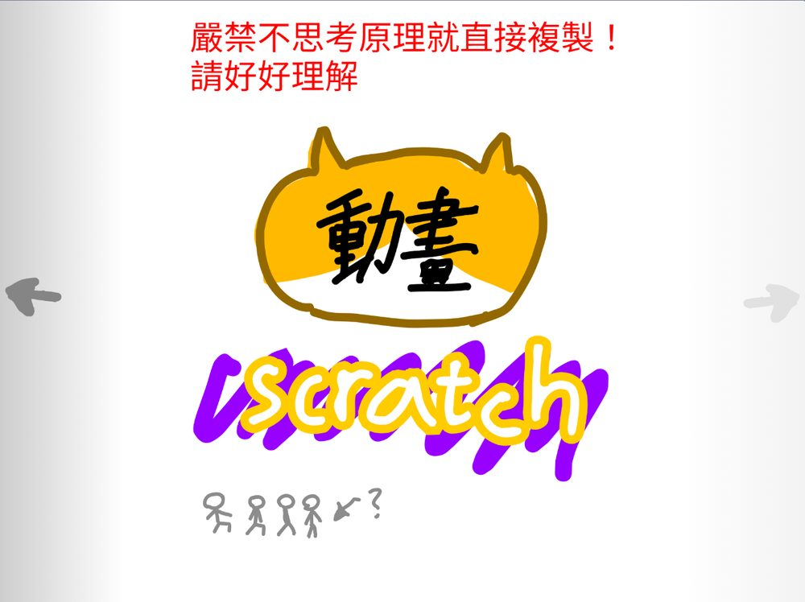

分鏡 1🐣 貓出生貓咪出生的畫面，接著貓咪離開媽媽。廣播 → 進入分鏡 2
分鏡 2🌧️ 開始流浪好心人餵飯、流浪狗出場、好餓……同一個主題裡有好幾個畫面。廣播 → 進入分鏡 3
分鏡 3🏠 領養出現動保人員，把貓咪送到中途之家。廣播 → 進入結尾
結尾💛 呼應主題最後回到「幸福人生」這個題目，讓故事有頭有尾。
這份文件改編自 60319 李昀宸同學做的 Scratch「動畫教學」。原作本身就是一個用 Scratch 寫成的投影片，共 18 頁、4 個章節，專案裡還用註解藏了更多程式技巧。
這裡把每一頁的重點拆開來說明「為什麼要這樣做」，並加上可以直接動手操作的示範。
先把昀宸的 18 頁投影片翻一遍，知道整份教學在講什麼。點畫面兩側、用下方按鈕，或按鍵盤 ← → 都可以翻頁。

昀宸在標題旁邊特別註明「僅供參考」——每個人的做法可以不一樣。但有一件事他反覆強調：先規劃，再動手。
很多人一打開 Scratch 就開始畫角色，做到一半才發現故事接不起來、角色不知道什麼時候該出現。點下面三個步驟，看看每一步要做出什麼。
「看題目 → 想劇情 → 決定架構。要記下來每個角色要在哪個分鏡。」 原作第 4 頁 看原投影片
他在紙上把題目拆成三段，再把每一段展開成幾個畫面。注意第 2 段下面還分出好幾個小情節——這就是他說的「一個主題不要只有一個畫面」。
照昀宸的方法，把你自己的動畫先寫成分鏡表。每一列是一個分鏡：這個畫面發生什麼事、哪些角色出現、哪些角色要消失、結束時要廣播什麼訊息給下一段。
| 分鏡 | 畫面內容（發生什麼事） | 出現的角色 | 要消失的角色 | 結束時廣播 |
|---|
「比較不建議動畫一次播到底（就是當綠旗按下時，1 2 3 就會直接播完），那樣子測試很困難。還有有時老師會要求你要做選單，可以選擇想看的章節，到時候就必須全部分開。」 原作第 6 頁 看原投影片
綠旗 → 第 1 段 → 第 2 段 → 第 3 段，全部接在同一條程式裡。
每一段都從「當收到訊息」開始，播完再廣播下一段。
「秒數也不要寫死，一個廣播一個動作才能同步！」 原作第 6 頁 看原投影片
「寫死」的意思是：用「等待 3 秒」去猜別的角色什麼時候做完。問題是配音錄出來的長度常常跟你想的不一樣，換一次錄音就要重算一次。
「還有，要記得不管是遊戲組還是動畫組，有時間的話做開頭的動畫或什麼什麼比較可以加分（大概吧）。」 原作第 7 頁 看原投影片
他自己也加了「大概吧」——評分標準裡不一定寫著「要有開頭動畫」。但一段好的開場能讓人一眼知道這部作品在講什麼，完成度也會高很多。記得把它排在主要內容都做完之後，不要本末倒置。
昀宸說「在動畫裡，廣播訊息很重要」。它是讓好幾個角色在同一個時間點一起反應的方法，也是第 1 章「一個廣播一個動作」的基礎。
「在某個地方（像是動畫之後）廣播訊息，在其他地方接收到後執行動作。」 原作第 9 頁 看原投影片
這就是昀宸第 11 頁畫的那張樹狀圖：綠旗 → 開頭動畫 → 廣播「1」→ 字幕出現、角色出現、開頭動畫隱藏，三件事同時發生。
「請注意命名要清楚，即使一百年後你回來看也要馬上就能懂（你也可以先記錄）。」「為角色命名時能加上關於在哪個畫面出現的資訊，如：動畫1-1…」 原作第 9、11 頁 看第 9 頁・看第 11 頁
作品做到後面，訊息和角色常常有二、三十個。名字取得好，一看就知道它是哪一段、做什麼事。
「如果你對這些技巧沒有很熟悉，建議每個角色各自負責不同畫面，盡量不用同一個。有些同學（像我）喜歡用分身，也能創造不同分身做不同事。」 原作第 10 頁 看原投影片
角色多一點沒關係，好處是出問題時一眼就知道是誰。命名時加上畫面編號，例如「動畫1-1 貓媽媽」「動畫2-1 流浪狗」。
昀宸稱它為「角色少的秘訣」：把很多東西畫成同一個角色的不同造型，需要時再建立分身，每個分身看自己是哪個造型來決定要做什麼。
「可以先想好誰在什麼時候要出現・消失。」 原作第 11 頁 看原投影片
「簡單來說，要有畫面・劇情・字幕・配音。」 原作第 13 頁 看原投影片
角色、背景、顏色風格一致。不一定要畫得很精緻，但同一部作品裡的風格要統一。
有開頭、有發展、有結尾，最後呼應主題。記得昀宸說的：一個主題不要只有一個畫面。
沒有聲音、或聽不清楚的時候，觀眾也看得懂在演什麼。
台詞、音效、背景音樂。錄音時注意音量和雜音，錄完自己聽一次。
「我會避免使用『說出』，而是透過『造型』來顯示。」 原作第 13 頁 看原投影片
昀宸公開了三個他自己常用的技巧。每一個都附上可以調整數字的示範，先玩玩看，再想想能用在你作品的哪裡。
「像是你可以使用『幻影』慢慢浮現不突兀。」 原作第 17 頁 看原投影片
「對於這個我也不會解釋，高中數學。但是用於動畫我覺得很好用，你可以試著拼出以下程式，看看效果。接著，就看你怎樣運用了。」「效果很神奇喲！你們可以更改數值看看變化！」 原作第 17 頁 看原投影片
「你是看到這開始想用在遊戲裡，跟我說一聲，也許我認可你後會告訴你用法也說不定！」 原作第 17 頁
「感謝你看到最後，我不能透露更多機密了哈哈！……你可以看看這個教學內部程式，有更多教學。」 原作第 18 頁 看原投影片
我們把他的專案打開來看。這個投影片本身就是用 Scratch 寫的，程式旁邊留了不少註解。下面每一段的「昀宸的註解」都是從專案裡原封不動抄出來的。
「不要傻傻的用下面那一個，這樣（直到結束）才能循環播放！」位置：舞台的程式
「初始化要記得！！」「圖層要注意！！！！」位置：「幻燈片」角色
「這樣就能造型換成上一個，簡簡單單。」位置：「幻燈片」角色
Scratch 有「造型換成下一個」，卻沒有「上一個」。昀宸的做法是把目前的造型編號減 1，再換過去。
「主體隱藏，分身工作，也很不錯！」「判斷造型編號，各自做自己的工作。」位置：「箭頭」角色
造型 1 是「下一頁」箭頭，造型 2 是「上一頁」箭頭。
「可以避免滑鼠持續按著時，會重複超多次廣播。」位置：「箭頭」角色
「透過圖像效果，看起來更美觀（當滑鼠沒碰到他，變透明一點，碰到時不透明，讓玩家知道那個好像能點）。」位置：「箭頭」角色
沒碰到時「圖像效果 幻影 設為 80」，碰到時設為 20。這個小細節不影響功能，卻讓看的人不用猜就知道可以點。
打開專案，你會看到兩個很特別的名字——它們本身就是教學：
「幻燈片（你們看，命名要命名的好理解）」
一看就知道這個角色是投影片本體。對照第 2 章「一百年後回來看也要懂」。
「像這種變數，用不到，就應該刪掉」
Scratch 新專案預設會有一個「my variable」。用不到的變數、積木、造型都要清掉，別人看你的程式才不會被搞混。
選一個答案就會看到解說。